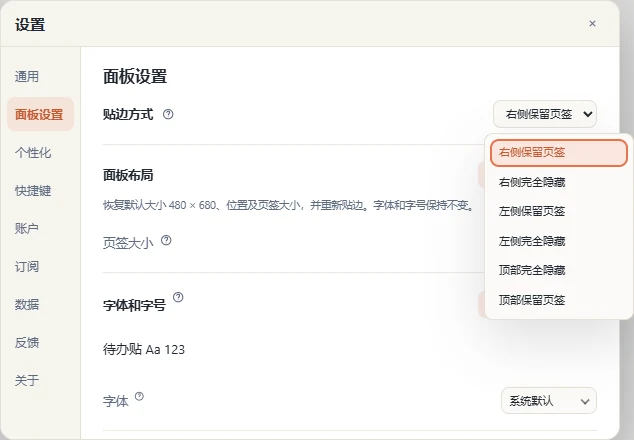

第一次使用 · 功能速查
先分清这几个常用功能
待办负责“要做什么”，便签负责“记下什么”。清单整理同一项目的待办，标签则方便跨项目分类。日期、提醒和重复分别设置，可以按需要组合。
安排日期、提醒、重复，分别管什么？| 功能 | 解决的问题 | 典型场景 |
|---|
| 安排日期 | 计划在哪天、什么时段做 | 明天下午写方案 |
|---|
| 提醒 | 希望几点收到通知 | 开会前半小时提醒 |
|---|
| 重复待办 | 按规则生成下一次事项，分别完成 | 每周五交一次周报 |
|---|
| 循环提醒 | 对同一条事项多次通知 | 每天两次提醒，直到提交材料 |
|---|
举个例子周五 16:00 开会：安排日期设为周五 16:00，提醒设为周五 15:30。每周都开会，再设置每周重复；只开这一次就不需要重复。
主面板上方按钮
- 头像
- 打开设置和账户菜单。
- 自动收起
- 贴边后，离开面板自动收起。
- 图钉
- 控制面板是否置顶。
- 铃铛
- 查看待办提醒和反馈回复。
- 衣服
- 切换皮肤、调整透明度。
- …
- 打开日历视图、检索和导出、归档库、回收站等。
- ×
- 隐藏面板至托盘；应用仍在运行，点击托盘图标可重新显示。
以下以 Windows 当前正式版为例。macOS 的入口与已支持功能以对应版本为准。使用左侧目录切换章节；窄屏可横向滑动目录。
继续了解
头像 → 设置 → 面板设置 → 贴边方式
让面板随用随开，离开后收起
经常切换待办和便签，可以保留页签；希望桌面更干净，可以完全隐藏。贴边方式、自动收起和置顶是三个独立设置。
- 选择贴边方式在「面板设置」选择左侧、右侧或顶部，以及保留页签或完全隐藏。
- 移动到目标屏幕边缘按住面板顶部空白处拖动到对应边缘。使用外接屏时，先移动到想使用的那块屏幕。
- 开启自动收起点击主面板右上角的自动收起按钮。鼠标离开且没有正在处理的输入或弹窗时，面板自动收起。
- 再次展开保留页签时点击页签；完全隐藏时，将鼠标移到对应屏幕边缘、原面板所在位置停留。

面板设置中的六种贴边方式置顶、收起、隐藏和退出的区别
- 置顶
- 让面板位于其他普通窗口上方，不负责自动收起。
- 自动收起
- 将面板收回屏幕边缘，继续通过页签或边缘唤出。
- 隐藏面板至托盘
- 点击右上角 ×，暂时隐藏整个面板；通过托盘图标找回。
- 关闭应用
- 从头像菜单退出软件。本机提醒需要应用运行，退出后不会继续执行。
面板找不到时，先点击系统托盘中的待办贴图标；必要时在「设置 → 面板设置」恢复默认大小和位置。
继续了解
侧边页签 · 设置 → 面板设置
把常用内容留在屏幕边缘
- 切换内容点击主待办、清单或便签页签，打开对应内容。常用清单可固定到侧边，便签页签可从便签库控制显示。
- 调整左右页签宽度在左右保留页签模式，将鼠标放到页签远离屏幕的一侧边缘，出现调整光标后拖动。拖动时预览，松开后保存；展开和收起状态都可调整。
- 选择宽度模式「整列调整」让整列采用统一宽度；「按内容调整」按各页签标题适配，也允许手动调整单个页签，手动调整不会切换宽度模式。右键菜单可恢复默认宽度。
- 调整位置和顺序面板收起时长按主待办页签，再拖动可移动整组位置；长按便签或清单页签拖动可调整顺序。页签太多时，可滚动查看或从便签库打开。
收起到便签库，不等于归档
不想让某张便签常驻侧边，可在便签库关闭它的页签显示，或右键页签选择收起到便签库。内容仍保留，可继续从便签库打开；要放回侧边，再开启显示。
页签宽度只影响显示空间，不会改变正文的字体大小，也不会重命名便签。
继续了解
主待办 → 今天 / 本周 / 本月 / 待安排
先记下，再用列表和标签整理
- 新建待办在输入框输入标题后按 Enter，或点击纸飞机。Shift + Enter 换行。也可通过「设置 → 快捷键」中的快速添加入口，在其他软件里随手记录。
- 编辑完整属性双击待办标题打开详情，设置安排日期、提醒、重复、所属清单、优先级、标签、详情备注和子任务。
- 核对文本识别结果输入日期、时间、提醒、优先级、重复或标签时，可在浮层中逐项选择是否采用；「保留标题原文」决定被采用的字段是否仍保留在标题中，「取消识别」则按原文创建。
- 批量添加主面板支持粘贴带编号或项目符号的清单，按界面提示确认拆分结果，避免将长段文字误拆成多条。
强调标题中的重点
在待办输入框或标题编辑区域选中部分文字，右键选择加粗、倾斜、下划线或文字颜色。格式只作用于选中的文字；关联链接仍保持可识别的链接样式。
输入算式，按 Tab 补全
在支持计算的标题输入框输入 3*4 等表达式，出现结果提示后按 Tab 补入结果。不按 Tab 不会自动替换原文；单位计算只适用于可识别、可兼容的单位。
几个列表查看的是同一批待办
- 今天
- 查看今天安排的事项；是否同时显示逾期事项，由个性化设置决定。
- 本周
- 按日期查看这一周的安排，可切换周，在对应日期的添加入口维护事项。
- 本月
- 默认看整月；点击日期筛选当天，点击年月可回到整月范围。日历右上方箭头可收起或展开日历。
- 待安排
- 查看没有安排日期的待办。安排日期后，可在相应日期中找到。
优先级、标签与排序
优先级表示轻重缓急；标签适合“客户”“资料”“待确认”等跨项目分类。一条待办可以有多个标签，所属清单则只有一个。
「设置 → 个性化 → 列表排序方式」可选按添加顺序倒排（默认）、按添加顺序正排、按优先级或按安排时间。排序只改变展示顺序，不会修改日期或提醒；置顶事项、日期分组及完成分区仍按各自规则展示。
开启「待办列表自动编号」后，序号跟随当前显示顺序变化，不写入标题。子任务显示父级序号下的层级编号。列表详情和预览行数也可在个性化中调整。
识别结果需要核对，不确定时可以取消。可在「设置 → 个性化」关闭待办文本识别；正常输入和手动设置仍可使用。
主面板中的待办、标签和子任务继续了解
双击待办标题 → 安排日期
安排日期：打算什么时候做
安排日期决定待办在哪些日期列表和日历中显示。它是计划时间，设置后不会自动创建提醒，也不会自动完成待办。
- 选择日期只需要“明天做”时，选择日期即可，不必填写几点。没有安排日期的事项保留在「待安排」。
- 需要时选择时分启用时分后，选择时间点或时间段。时间点适合会议、预约；时间段适合专注工作或有起止时间的活动。
- 需要时设置跨日范围设置开始和结束日期，表示一段连续安排。跨日范围与每天重复不同，不会每天生成一条新待办。
- 确认修改保存后回到相应日期列表查看。想改期，可在详情修改，也可使用日历中的拖动安排。提醒需要另外核对。
举个例子“周二整理合同”只设周二日期；“周二 14:00 面试”设时间点；“周二 14:00–16:00 写方案”设时间段；“周二到周四出差”设跨日范围。
逾期与完成日期
安排日期是原计划，完成时间是实际完成的时间。待办右键可补记完成时间；日期列表中已完成事项的归属可在「设置 → 个性化 → 待办日期归属」调整。
逾期主要按安排日期判断，不会只因为今天的某个钟点已过，就把今天的事项当成昨天的逾期。是否将逾期待办带到今天显示，可在个性化中设置。
想在前一天收到通知，请设置提醒；想每周二都有一条独立事项，请设置重复。仅修改安排日期，不能代替这两项设置。
继续了解
双击待办标题 → 提醒
提醒：希望什么时候通知我
提醒用于通知，不负责把待办移到某一天，也不会生成新待办。可以在安排时间之前提醒，也可以对同一条事项设置循环提醒。
只提醒一次
- 选择提醒日期和时分进入提醒页，选好未来的日期和时间。当天、提前 1 天、提前 2 天等快捷项以安排日期为参照，当前快捷时刻为 08:30。
- 置灰时先看原因鼠标悬浮在不可选的快捷项上查看说明。快捷日期或时刻不可用时，可以直接在日历里另选未来时间。
- 点击「设置提醒」保存点击快捷项或选择时间属于选择过程；确认后点击底部按钮保存，避免只选择未保存。
- 修改或清除重新打开提醒页修改；点击「清除」后，还需点击底部「确认清除提醒」。直接关闭弹窗可放弃这次清除。
同一条待办，按规律反复提醒
- 进入高级提醒先确认当前提醒时间，需要修改时使用上方「修改」入口。
- 设置频率与时刻支持每天、指定星期、指定月份和日期，或每隔几天、几小时几分钟。每天、每周、每月可设置多个提醒时刻，目前最多 6 个，用 ＋ 增加、× 移除对应时刻。
- 选择结束条件选择直到待办完成，或限定后续提醒次数。检查「接下来」的日期与时间，确认首次提醒和后续次数符合预期。
- 直接保存在高级提醒页点击「设置提醒」即可，不需要返回普通提醒页再保存。
举个例子“提交报销”只需完成一次，但容易忘：设置每天 10:00 和 16:00 循环提醒，直到待办完成。“每周五交周报”需要每周独立勾选，则使用重复待办。
 高级提醒中的循环规则与时间预览
高级提醒中的循环规则与时间预览通知、勿扰和消息中心
点主面板铃铛查看待处理提醒。在「设置 → 通用」调整系统通知、提示音、托盘闪烁和勿扰时刻。系统通知权限或 Windows 勿扰状态也会影响通知横幅。完成待办后，其相关待处理提醒会结束。
本机提醒需要待办贴处于运行状态。点击 × 隐藏到托盘仍会运行；完全退出应用则不会按时通知。重新运行后会按规则补发当天漏提醒，不会把往日提醒全部重新弹出。
继续了解
双击待办标题 → 重复 → 自定义
重复：每次都有一条可完成的事项
重复待办用于有固定节奏的工作，例如每天复盘、每周交周报、每月缴费。各次事项可以分别完成，保留各自的执行记录。
- 先确定起始安排先核对本条待办的安排日期，再选择重复规则。
- 选择常用规则每天、每周工作日、法定工作日、每周、每月，或进入自定义选择月份、星期、月内日期及日期范围。
- 核对适用日期每周工作日指周一到周五；法定工作日会考虑已收录的节假日和调休补班。超出节假日数据范围时，按周一到周五处理。每月选不存在的日期时，该月份会跳过；需要月末时可选择每月最后一天。
- 决定是否提前生成不想未来事项占满列表，可保持关闭；需要提前规划时开启「提前生成后续待办」，核对生成范围后确认。
举个例子每周五交周报：选择每周，起始日期设为周五，再加一条周五下午的提醒。每个工作日检查工单：按是否需要包含调休补班，选择“每周工作日”或“法定工作日”。
修改和结束重复
编辑重复事项时，留意界面说明的作用范围，例如本次及以后；不要把系列修改当成只改一条。更早的事项和已完成记录保留。取消重复会停止后续计划，不会因为取消规则就删除已经保存的事项。
昨天没完成，不会阻止今天按规则生成下一次事项。旧事项是否继续出现在今天，由逾期显示设置决定。
“连续三天做同一个任务”可用跨日安排；“连续三天每天各完成一次”才需要重复。“同一任务每天通知两次”用循环提醒。
继续了解
待办详情 → 子任务；设置 → 个性化 → 待办进度
把一件事拆成可执行的步骤
子任务适合有明确步骤的工作，例如准备资料、校对、提交。它们属于父待办，可逐项完成，也可分别补充日期、提醒和详情。
- 添加子任务打开父待办详情，在子任务输入框填写并确认。需要更细的步骤时，可继续添加下一级，最多五级。
- 展开或收起点击父待办左侧箭头查看或收起步骤；勾选完成圆圈处理当前事项。
- 了解联动规则完成父待办会同时完成其子任务；所有子任务完成后，父待办也会完成。取消子任务完成时，其父待办会恢复为未完成。
- 保持步骤顺序步骤有先后依赖时，可在个性化关闭「已完成子任务移到末尾」，避免勾选后步骤被挪到下方。
进度与完成状态
在个性化开启待办进度，并选择喜欢的展示样式。细环、水位样式可右键完成圆圈设置百分比；进度条、胶囊样式可点击或右键设置。设为 100% 会标记完成。关闭展示不会清除已设置的进度。
序号是当前列表顺序的展示，不是任务名称。拖动或切换排序后会重新编号；子任务以父级序号为前缀，便于看出层级。
继续了解
主待办 → 清单 → 新建清单 / 我的清单
用清单划分项目，用标签交叉分类
清单表示任务的归属，适合“工作项目”“家庭”“学习”。标签表示任务的特征，适合“待确认”“客户甲”“资料”，同一标签可用于不同清单。
- 新建清单在清单菜单中新建，填写名称并选择颜色。
- 放入待办在待办详情设置「所属清单」。选「无」就是普通待办；移入清单不会复制待办，也不自动添加标签。
- 决定是否加入日期汇总清单的「在日期列表中显示」控制其成员是否出现在今天、本周、本月和待安排的汇总中。关闭后仍可在清单里操作，提醒仍有效。
- 固定到侧边在「我的清单」中，点击该清单编辑按钮左侧的固定按钮，生成同名页签；再次取消固定，只移除侧边入口，清单和待办仍保留。
独立页签仍是同一份清单
点击清单页签直接进入该清单，不会多生成一份主待办。新增事项归入当前清单；侧边页签可以拖动整理。主待办仍用于统一查看日期安排。
提醒角标与删除
清单固定为独立页签后，所属待办及子任务的提醒计入对应清单页签；其他待办由主待办页签汇总。时间轴记录自己的提醒归所属便签。
删除清单需要确认；待办会保留并解除清单归属。删除待办、移除标签与取消固定页签是不同操作，执行前核对按钮说明。
举个例子把“交付网站”放在工作项目清单，同时标记“客户甲”和“待确认”。项目归属只需要一份，检索时仍可通过标签找到跨项目的事项。
继续了解
侧边 ＋ → 新建便签 → 普通便签
长内容用标题整理，需要时折叠
普通便签持续维护同一份内容，适合会议纪要、资料、操作步骤和长期计划。正文会自动保存，离开前可留意已保存状态。
- 填写标题和正文标题用于页签和查找；正文承载完整内容。通过底部格式 A 调整字号、颜色、加粗、倾斜、下划线、列表与标题。
- 使用多级标题通过格式工具或右键设置标题等级；也可在行首输入相应数量的 # 和标题，再按 Enter，例如 #### 表示四级标题。
- 折叠章节将鼠标放到标题上，左侧出现折叠箭头；点击收起该标题下的内容，再次点击展开，标题本身保留。
- 通过大纲定位鼠标移到正文右侧的大纲入口查看标题目录，点击标题跳到对应位置。大纲标题旁的按钮可在全部收起与全部展开间切换。
格式刷和移除格式
先选中已有样式的文字，再点格式刷，拖选目标文字即可刷字符样式；光标放在源段落内取样，再点击目标段落，可刷标题、对齐等段落样式。双击格式刷可连续使用，按 Esc 结束。要去掉样式，选中相应文字后点「移除格式」；没有选区时，作用于当前段落。
正文列表与待办的区别
便签中可使用项目符号、有序列表和复选框列表。复选框只是当前便签里的勾选项，不会自动变成主待办，也不会自动提醒；需要安排和提醒时，创建待办并使用关联。
便签库、归档和删除
- 便签库
- 集中查找便签、分组、控制侧边显示；可切换仅标题、标题和内容或列表展示。
- 分组
- 按用途归类便签；长按卡片可排序，也可移入分组。
- 归档
- 把暂时不用的便签从日常区域收纳到归档库；需要时恢复。
- 删除
- 移入回收站；永久删除前核对内容和备份。
便签中的标题、关联、表格与本地附件继续了解
新建便签 → 时间轴便签；输入 @ 进行关联
按时间记录过程，把行动变成待办
时间轴便签适合工作日志、项目跟进、沟通记录。每条记录有自己的发生日期和时间，可以补记过去的内容，也可以单独设置提醒。
- 新建记录选择记录发生的日期、时间，输入内容并保存。需要时补充记录标题和详细内容；记录时间不是自动提醒时间。
- 修改或补记双击记录编辑，或通过该条记录的操作菜单处理。修改的是当前记录，不是整张便签。
- 从记录生成待办使用记录的生成待办入口，核对待办标题、详情、所属清单和安排日期。安排日期默认带入记录的日期与时间；所属清单默认「无」，可改选已有清单。
- 保留原记录生成的是一条关联待办，原记录仍在时间轴中。之后可从关联入口打开待办处理，不需要重复录入。
通过 @ 链接待办或便签
在支持关联的标题或正文中输入 @，选择「待办」或「便签」，再选目标；可以搜索缩小范围。没有匹配时无需等待空提示，继续输入即可。选中后以链接样式保留，点击可直接跳转。
选择时间轴便签时，可以关联整张便签；需要精确引用时，先选便签，再选其中一条记录。普通便签、待办标题和详情备注中的关联用于引用，不会自动改变日期、完成状态或清单归属。
举个例子时间轴里记下“客户确认了方案，明天下午发合同”，可从这条记录生成“发合同”待办，改好安排日期与提醒。日志保留沟通过程，待办负责后续行动。
时间轴便签不会与整份清单自动绑定，也不会把每条新记录自动同步成待办。记录提醒和待办提醒分别设置，避免对同一件事重复配置两次通知。
继续了解
主面板 … → 日历视图；主待办 → 四象限
同一份待办，换一种方式看
日历：按时间安排
- 切换日期和视图在日历中切换可用的周、月等视图，查看对应日期的事项。没有安排日期的待办，不会凭空出现在某个日期格中。
- 查看和维护当天事项在日期格中操作完成圆圈、双击标题编辑；双击日期空白处可打开当天更完整的列表，并在对应日期添加事项。
- 拖动改期拖动待办到目标日期改变安排日期。带时间或跨日范围的事项改期后，应核对完整起止时间和提醒。
 日历视图中的一周安排
日历视图中的一周安排固定在桌面与置底
日历的固定在桌面、置底与主面板置顶不是同一项。固定在桌面用于桌面常驻；Windows 置底用于显示在原生桌面图标下方，需要先开启固定。遇到系统桌面层不可用时，保留普通窗口使用，不需要反复拖动面板。
四象限：按轻重缓急处理
四象限默认按优先级归类，可在设置中调整重要性、紧急性和显示范围。所属清单、标签、日期、完成范围共同决定当前显示内容；它不自动跟随进入前的今天、本周或本月。
筛选只决定看见什么，不会修改待办。直接拖动待办跨象限，则会调整该待办的重要性、紧急性；完成和编辑仍作用于同一条原待办。
切换列表、日历或四象限不会复制任务。在任一视图修改后，其他入口查看的仍是同一条内容。
继续了解
主面板衣服图标；设置 → 面板设置 / 个性化
让面板适合自己的桌面
- 切换皮肤点击衣服图标选择风格，标题、按钮、菜单和正文会跟随主题。切换皮肤不会改变待办或便签内容。
- 调整透明度使用外观面板中的透明度滑块。背景复杂时适当提高不透明度，让文字更清楚；透明度不会更换电脑壁纸，也不是鼠标穿透。
- 分别调整字号在面板设置中调整正文字号和界面字号。正文影响待办、便签内容；界面字号影响导航、按钮等控件。拖动窗口边框只改变可用空间，不会缩放字体。
- 调整阅读密度在个性化设置列表详情、详情图片、预览行数、子任务完成后的顺序等，根据窗口宽度选择合适的密度。
 海盐蓝皮肤下的主面板
海盐蓝皮肤下的主面板两个“恢复默认”用途不同
- 恢复默认字体和字号
- 恢复字体、字号及相应文字颜色，不负责移动窗口。
- 恢复默认大小和位置
- 找回窗口布局，不重置已经选择的正文和界面字号。
继续了解
设置 → 个性化 → 隐私锁；便签或分组右键
共享屏幕时，把私密便签锁起来
隐私锁用于保护便签正文，适合共享电脑、演示和临时离开座位。它与账户登录密码不同，也不等于给所有导出文件加密。
- 设置密码和保护范围开启隐私锁，按页面提示设置密码，选择保护指定便签或便签库。
- 给便签或分组加锁通过便签、分组的右键菜单管理保护。给分组加锁后，新建或移入其中的便签也会受保护。
- 选择自动重新锁定设置闲置多久重新锁定，也可通过主面板菜单立即锁定。解锁后再查看或编辑受保护内容。
- 导出前核对范围锁定便签的检索、导出需要按提示解锁。已经导出的副本不会因为之后给便签加锁而自动加密。
页签名称仍可能可见，避免把敏感信息直接写在标题中。忘记隐私锁密码时按应用提供的验证流程处理，不要删除本机数据来尝试解锁。
继续了解
设置 → 个性化 → 快速录音；设置 → 快捷键
不方便打字时，先录下声音
- 先开启功能在个性化开启快速录音。开启开关只显示入口，不会自动开始录音。
- 开始和停止输入框为空时，点击麦克风开始，再点击停止。也可以在快捷键设置中查看或修改全局开始、停止组合键；冲突时更换组合键。
- 收起时继续录音录音不需要一直展开主面板。面板收起时可继续录制，结果会在面板展开后展示，不会因录音强制展开。
- 找到录音文件在快速录音设置中打开录音文件夹。文件保存在本机数据目录，重要录音可自行另存备份。
单次最多 60 分钟，使用系统默认麦克风，不录电脑内部声音；需要系统允许麦克风访问。录音文件只保存在本机，不自动转写，也不会上传录音文件。
继续了解
主面板 … → 检索和导出；设置 → 数据
能找到，也能安全带走
查找与导出阅读副本
在「检索和导出」按关键词及页面提供的日期、标签、清单等范围筛选待办和便签，核对结果后选择导出格式。HTML、PDF、Word 适合图文阅读，Excel、CSV 适合整理表格数据；具体保留效果依格式而异。
选好保存位置后等待结果，成功可打开文件或所在文件夹。若同名文件正在其他软件中使用，关闭文件再重试。导出的是当时的副本，后续修改、加锁或删除不会改写已导出的文件。
备份与恢复
- 导出可恢复备份在「设置 → 数据」导出 .dbtbackup 文件，按需选择数据与设置。重要备份保存在其他磁盘或安全位置。
- 核对备份范围备份包含所选范围内的待办、清单、便签及正文使用的图片、附件等数据；本机快速录音和用户另行导出的文件不在此备份范围内，需要自行保存。
- 换机时先登录在新设备登录同一账号，再选备份文件。备份不携带登录凭证，新设备需要重新登录。
- 恢复前再次核对导入按所选范围替换当前内容，不是追加合并。恢复前先备份当前数据；加密备份需要正确密码。旧 .dbtdata 格式仍可按提示导入，但覆盖范围与新格式不同。
 数据设置中的备份与本机保存位置
数据设置中的备份与本机保存位置保存位置、归档与回收站
本机保存位置可在数据设置中查看、打开或按应用流程更改。更换本机目录不等于跨设备同步；不要在应用运行时手动搬动数据库。暂时不用的便签可归档，需要恢复已删除内容时先查回收站。
可阅读 HTML、PDF、Word 或表格导出文件不能代替可恢复备份。重装系统、换机、注销账号或清理磁盘前，先检查备份能否找到，并单独保管录音和外部导出文件。
继续了解
头像 → 设置 → 通用 / 快捷键 / 账户 / 反馈 / 关于
面板找回、更新与问题反馈
开机启动与快捷键
在「通用」选择是否开机启动，以及自动启动后是否隐藏到托盘。手动启动与开机自动启动的显示行为可能不同。快捷键以设置页当前显示为准，可分别配置显示主面板、快速添加、隐藏到托盘、检索和导出及快速录音等操作。
退出登录、注销与卸载
- 退出登录
- 结束当前登录，下次可重新登录。
- 注销账号
- 按账户页的确认流程永久注销，操作前先导出备份；不要当作普通退出登录使用。
- 卸载应用
- 通过系统应用管理或安装目录中的卸载程序进行。卸载前先备份需要保留的内容。
在「账户」中修改密码、换绑手机号，资料通过头像菜单修改。账号登录不代表本机数据已经自动备份到其他设备。
常见问题先查这里
- 面板不见了
- 先点击托盘图标；完全隐藏模式把鼠标移到原位置的对应屏幕边缘。外接屏变动后，可在面板设置恢复默认大小和位置。
- 没有收到提醒
- 确认应用仍在运行、提醒已点击保存，并检查应用勿扰时刻、系统通知权限和 Windows 勿扰状态。
- 某条待办不在当前列表
- 检查安排日期、完成分区、所属清单的日期列表显示设置及当前筛选，不要先重复创建。
- 某张便签不在侧边
- 先到便签库查看是否只是收起了页签，再查归档库和回收站。
- 输入或编辑未保存
- 留意保存状态与错误提示。遇到卡住时记录操作步骤，重要内容尽量先保留副本，避免连续重复操作。
更新与反馈
在「设置 → 关于」查看版本和检查更新，也可从官网下载对应系统安装包。安装时遇到 Windows 拦截或组件问题，查看 Windows 安装流程说明。
在「设置 → 反馈」提交问题，尽量说明操作步骤、发生时间、系统与应用版本，必要时附截图；可在「我的反馈」跟进，回复也会进入消息中心。验证码、密码等信息不要放进截图。
继续了解